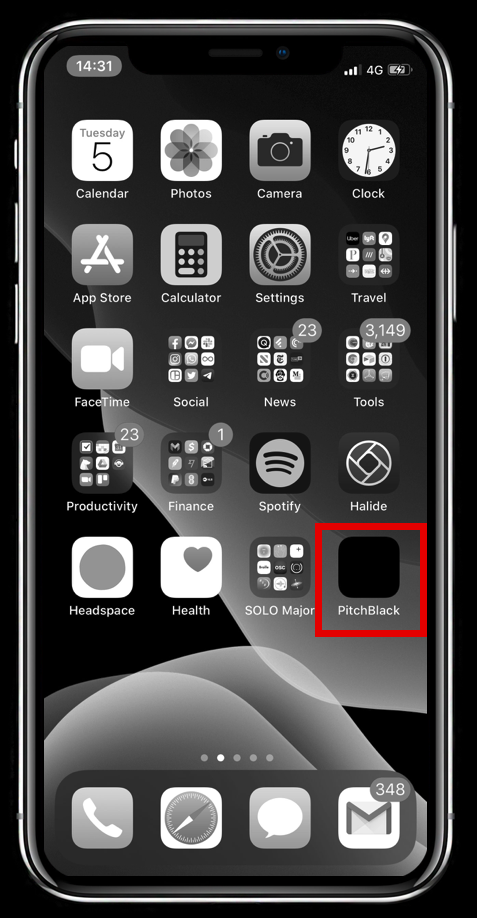

INSTRUCTIONS
1. Clone the repo
2. Build & run the Xcode project
3. Put the PitchBlack app on your homescreen

4. Enable Accessibliity Shortcut
- Go to Settings > Accessibility > Accessibility Shortcut
- Select VoiceOver

This is the accompanying app for AppBuilder 2020, talk UI Mode: Pitch Black.